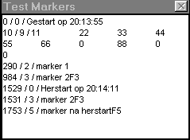

RF 2, Onset Systolische Bloeddruk
|
Deze functie werkt alleen in de mode "bekijken" en geeft dan alle markers met bijhorende positie en code (gescheiden door / ) weer als een lijst in een popup venster.
Als eerste wordt het samplenummer gegeven, dan de code en dan de markertekst.
Voorbeeld:

Voor de codes geldt:
0 = systeem marker (bijv. start, herstart)
1..8 = gebruikers marker
9 = speciale marker voor het opbergen van handmatige (numerieke) gegevens van functie 32
10 = speciale marker voor het opbergen van handmatige combobox gegevens van functie 33
Inputs: geen 
Parameters: dummy 
Outputs: geen 
© Instrumentele Dienst. Bijgewerkt op 8-12-1999.